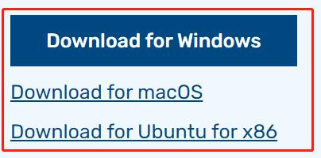
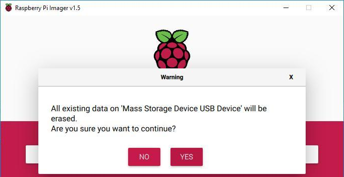

Get Started with Raspberry Pi¶
In this chapter, we firstly learn to start up Raspberry Pi. The content includes installing the OS, Raspberry Pi network and how to open terminal.
注釈
You can check the complete tutorial on the official website of the Raspberry Pi: https://projects.raspberrypi.org/en/projects/raspberry-pi-setting-up
If your Raspberry Pi is set up, you can skip the part and go into the next chapter.
Installing the OS¶
Required Components
Any Raspberry Pi |
1 * Personal Computer |
1 * Micro SD card |
Step 1
Raspberry Pi have developed a graphical SD card writing tool that works on Mac OS, Ubuntu 18.04 and Windows, and is the easiest option for most users as it will download the image and install it automatically to the SD card.
Visit the download page: https://www.raspberrypi.org/software/. Click on the link for the Raspberry Pi Imager that matches your operating system, when the download finishes, click it to launch the installer.
{kind=link}
Step 2
When you launch the installer, your operating system may try to block you from running it. For example, on Windows I receive the following message:
If this pops up, click on More info and then Run anyway, then follow the instructions to install the Raspberry Pi Imager.

Step 3
Insert your SD card into the computer or laptop SD card slot.
Step 4
In the Raspberry Pi Imager, select the OS that you want to install and the SD card you would like to install it on.

注釈
You will need to be connected to the internet the first time.
That OS will then be stored for future offline use(lastdownload.cache, C:/Users/yourname/AppData/Local/Raspberry Pi/Imager/cache, ). So the next time you open the software, it will have the display "Released: date, cached on your computer".
Step 5
Select the SD card you are using.

Step 6
Press Ctrl+Shift+X to open the Advanced options page to enable SSH and configure wifi, these 2 items must be set, the others depend on your choice . You can choose to always use this image customization options.

Then scroll down to complete the wifi configuration and click SAVE.
注釈
wifi country should be set the two-letter ISO/IEC alpha2 code for the country in which you are using your Raspberry Pi, please refer to the following link:
https://en.wikipedia.org/wiki/ISO_3166-1_alpha-2#Officially_assigned_code_elements

Step 7
Click the WRITE button.

Step 8
If your SD card currently has any files on it, you may wish to back up these files first to prevent you from permanently losing them. If there is no file to be backed up, click Yes.
{kind=link}
Step 9
After waiting for a period of time, the following window will appear to represent the completion of writing.

Power on the Raspberry Pi¶
Now, the Raspberry Pi OS is configured, you can plug out the USB card reader and then plug the Micro SD card into the Raspberry Pi.
Put two 18650 fully charged batteries in the holder, plug the wires from the battery holder into the development board then toggle the switch from off to on. You are also recommended to use the power adapter of Raspberry Pi to power your car for that the first test will take a long time.
Get the IP Address¶
After the Raspberry Pi is powered on with a power adapter, we need to get the IP address of it. There are many ways to know the IP address, and two of them are listed as follows.
1. Checking via the router
If you have permission to log in the router(such as a home network), you can check the addresses assigned to Raspberry Pi on the admin interface of router.
The default hostname of the system, Raspberry Pi OS is raspberrypi, and you need to find it. (If you are using ArchLinuxARM system, please find alarmpi.)
2. Network Segment Scanning
You can also use network scanning to look up the IP address of Raspberry Pi. You can apply the software, Advanced IP scanner(download from Google).
Click Scan and the name of all connected devices will be displayed. Similarly, the default hostname of the Raspberry Pi OS is raspberrypi, now you need to find the hostname and its IP.

Use the SSH Remote Control¶
We can open the Bash Shell of Raspberry Pi by applying SSH. Bash is the standard default shell of Linux. The Shell itself is a program written in C that is the bridge linking the customers and Unix/Linux. Moreover, it can help to complete most of the work needed.
For Linux or/Mac OS X Users
Step 1
Go to Applications->Utilities, find the Terminal, and open it.
Step 2
Type in ssh pi@ip_address . “pi” is your username and “ip_address” is your IP address. For example:
ssh pi@192.168.18.197
Step 3
Input”yes”.

Step 4
Input the password and the default password is raspberry.

Step 5
We now get the Raspberry Pi connected and are ready to go to the next step.

注釈
When you input the password, the characters do not display on window accordingly, which is normal. What you need is to input the correct password.
For Windows Users
If you're a Windows user, you can use SSH with the application of some software. Here, we recommend PuTTY(You can download from Google).
Step 1
Download PuTTY. Open PuTTY and click Session on the left tree-alike structure. Enter the IP address of the RPi in the text box under Host Name (or IP address) and 22 under Port (by default it is 22).

Step 2
Click Open. Note that when you first log in to the Raspberry Pi with the IP address, there prompts a security reminder. Just click Yes.
Step 3
When the PuTTY window prompts “login as:”, type in pi” (the user name of the RPi), and password: “raspberry” (the default one, if you haven't changed it).

注釈
When you input the password, the characters do not display on window accordingly, which is normal. What you need is to input the correct password.
Here, we get the Raspberry Pi connected and it is time to conduct the next steps.